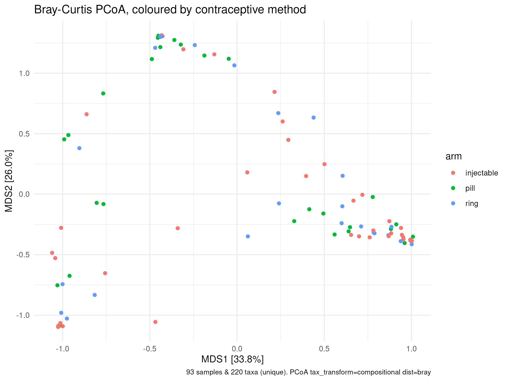
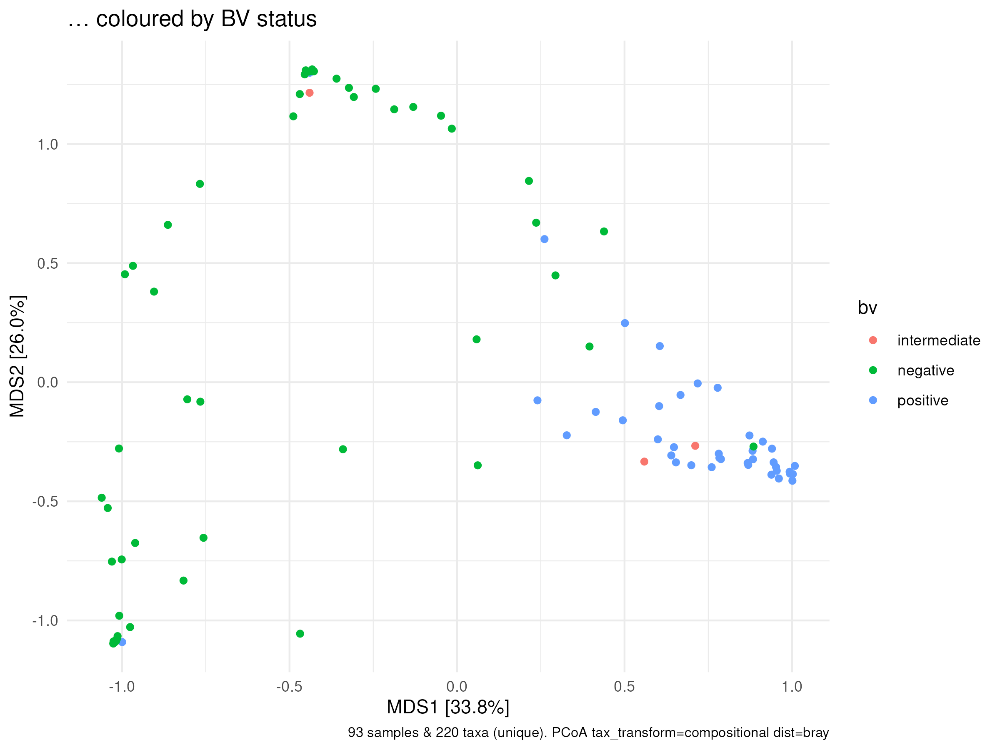
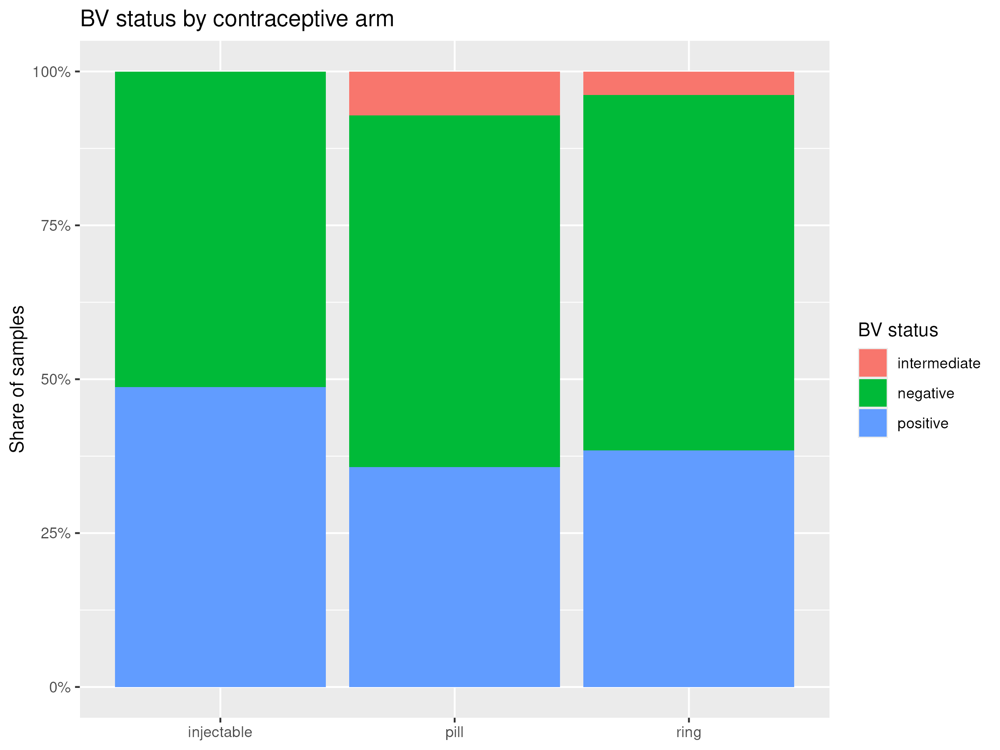

What we did:

“Three overlapping crowds, not three islands.” Arm alone: R² = 3.3%, p = 0.147. After BV, pH, STI and batch had their share: R² = 2.7%, p = 0.108.

“What separates them is BV — not the method.” BV: R² = 14.3%, p = 0.001. Pill vs injectable, alone: R² = 3.9%, p = 0.033 (→ 0.099 Holm-corrected).
| Choice | Route A | Route B | Kept |
|---|---|---|---|
| Distance | Bray-Curtis on relative abundances | on raw counts (draft 1) | A — raw counts punish the 9 shallow samples |
| Pairwise tests | Holm-corrected | raw p-values | A — three tests, three chances to be fooled |
Source we opened: Anderson (2001), the PERMANOVA paper — https://doi.org/10.1111/j.1442-9993.2001.01070.pp.x
Answer to Question 1: No. Method explains 3.3% (p = 0.147); every alternative distance agrees. The one hint — pill vs injectable, p = 0.033 — falls to 0.099 after correction. (A sanity check agrees: median Lactobacillus share 84.8% pill vs 45.3% injectable / 44.7% ring.)
What we did:
bv column first: label vs Nugent score agreed in 93/93 samples — safe to useSource we opened: the R documentation for fisher.test (?fisher.test)

Caption: “The share of each arm that is BV-negative, intermediate or positive.”
| Arm | any BV | positive only |
|---|---|---|
| injectable | 48.7% | 48.7% |
| pill | 42.9% | 35.7% |
| ring | 42.3% | 38.5% |
Fisher’s exact test: p = 0.454 (3 categories), p = 0.897 (any BV vs none).
Sanity check: median Gardnerella share — 24.6% in BV-positive vs 1.1% in BV-negative. The labels mean something.
Answer to Question 2: No. BV is common (~42–49%) everywhere; no arm is protected or penalised. So BV dominates the communities (Q1: R² = 14.3%) but is a rival explanation, not a confounder.
We do not believe: “no difference” means no difference exists (26–39 per arm can miss a modest effect); the pill-vs-injectable hint (it does not survive correction); that our distance sees everything (arm effects could hide under the BV signal); or that the arms were comparable at baseline (observational, not randomised).
| Question | Answer |
|---|---|
| Do the gene differences match the pill-vs-injectable hint? | Not tested yet — we expect mostly no, since the hint fell to p ≈ 0.10 |
| Does BV leave a mark on the immune data (cytokines)? | We expect yes — BV-positive samples already carry 24.6% Gardnerella vs 1.1% |
| Do cytokines differ by arm? | Open — the immune readout is where an arm effect could still hide |
| Which Lactobacillus dominates, crispatus or iners? | Checked now: iners peaks in the pill arm (17.3% vs 9.0% ring, 1.8% injectable); crispatus tracks BV (28.2% negative vs 0.1% positive), not arm |
| Does composition shift gradually with Nugent 0–10? | Expected yes — three categories may hide a dose–response |
| Is pH the middleman? | Checked now: pill’s median pH is 4.55 vs 5.0 in the other arms, and pH tracks BV (4.4 negative → 5.0 positive) — a look, not a test |
Data Science for Biology — group project